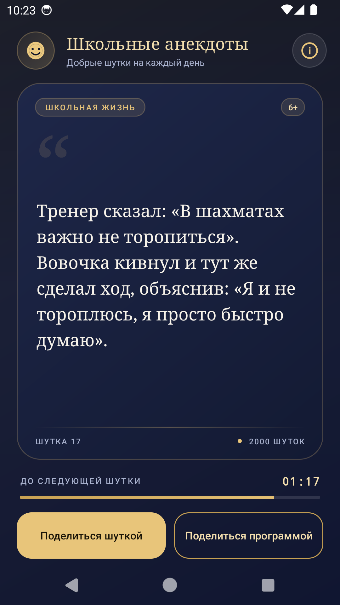
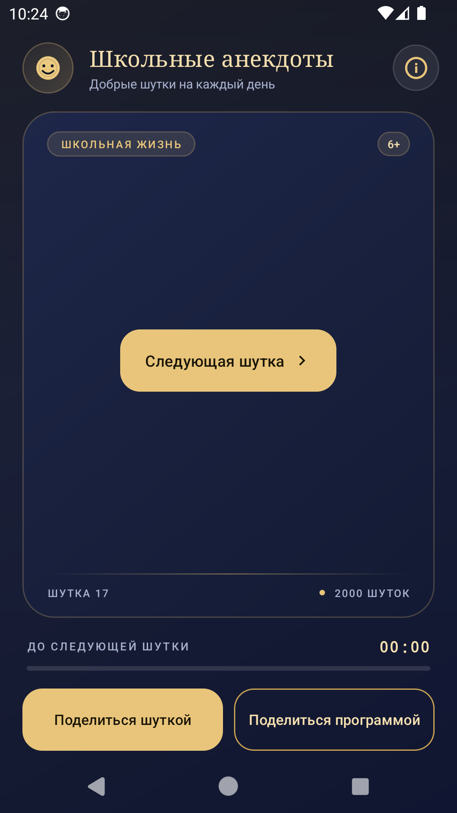
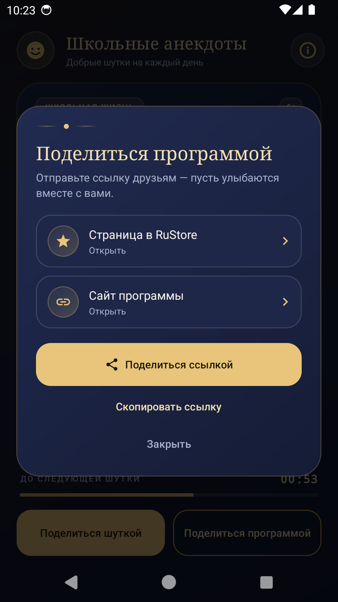
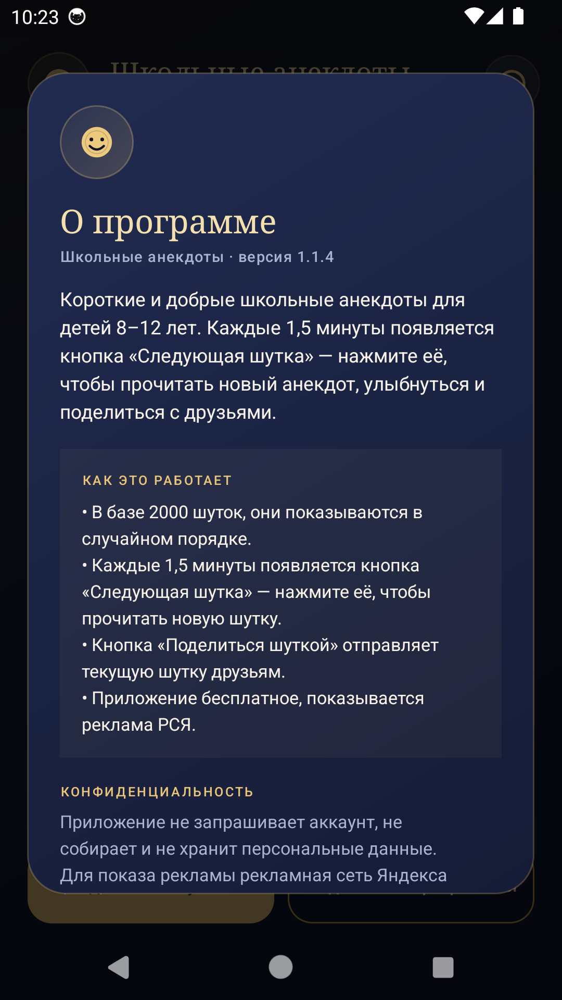

2000 коротких и добрых школьных анекдотов для детей 8–12 лет. Читайте, улыбайтесь и делитесь шутками с друзьями — без регистрации, без интернета и без лишних настроек.
- Android 8.0 и новее
- Версия 1.1.4
- ≈9 МБ
- 2000 шуток
- 6+
Как это работает
Шутка каждые 1,5 минуты
Анекдот показывается на экране, а через 90 секунд появляется кнопка «Следующая шутка». Можно читать не спеша — таймер подскажет, когда ждать новую.
2000 шуток в случайном порядке
Приложение само выбирает анекдоты и не повторяет их, пока не закончится вся коллекция. Скучно не будет.
Только добрые школьные темы
Уроки, перемены, учителя, домашние задания и школьные ситуации — без грубости, взрослых тем и обидных шуток.
Поделиться шуткой
Одна кнопка — и текущий анекдот уходит друзьям в мессенджер или социальную сеть вместе со ссылкой на приложение.
Копирование долгим нажатием
Долгое нажатие на текст копирует шутку в буфер обмена — удобно, если хочется сохранить её или отправить вручную.
Работает офлайн
Все 2000 шуток уже внутри приложения. Читать можно в дороге, на даче и там, где нет сети.
Без регистрации
Не нужно создавать аккаунт, указывать имя, телефон или почту. Открыли — и читаете.
Бесплатно
Приложение бесплатное. Единственный источник дохода — реклама Рекламной сети Яндекса внизу экрана.
Экраны приложения




Важно знать
- Приложение предназначено для детей 8–12 лет и имеет возрастную маркировку 6+.
- Приложение не запрашивает аккаунт, не собирает и не хранит персональные данные.
- Настройки и счётчик прочитанных шуток хранятся только на вашем устройстве.
- Внизу экрана показывается реклама Рекламной сети Яндекса. Для детской аудитории персонализация рекламы отключена, действуют возрастные ограничения.
- Все шутки находятся внутри приложения — интернет нужен только для загрузки рекламы.
- Вопросы и предложения можно отправить на страницу поддержки.